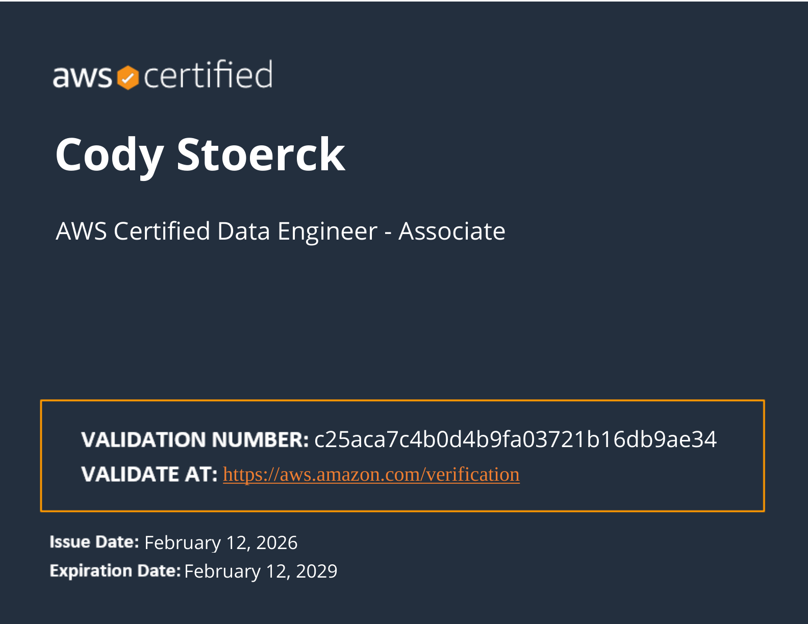

Data Analyst Building End-to-End Analytics Engineering Solutions
I build analytics systems that turn raw operational data into trusted reporting layers. My portfolio showcases hands-on work across ingestion, cloud warehousing, dbt transformations, orchestration, and executive dashboarding using SQL, Python, Snowflake, Airflow, Airbyte, AWS, and Power BI.
Onyx Auto turns simulated used car operations data into automated business reporting. Transactions are captured in a PHP/MySQL source application, loaded into Snowflake, transformed with dbt, visualized in Power BI, and refreshed through an Apache Airflow workflow.
Movie Performance turns public movie rating, genre, budget, and revenue datasets into business-ready entertainment analytics. Raw CSV files are staged in Amazon S3, loaded into Snowflake, transformed with dbt, enriched with Python genre logic, and visualized in Power BI for revenue, rating, genre, budget, and ROI analysis.
Power BI, Tableau, DAX, dashboard UX, executive reporting, KPI design.
Programming & Analysis
Python, R, SQL, exploratory data analysis, statistical learning, data cleaning.
Cloud & Development
AWS, Git, GitHub, version control, environment configuration, technical documentation.
About
I am a data professional focused on analytics engineering and data engineering. My work combines data modeling, workflow automation, business intelligence, and dashboard development. I am currently pursuing a Master of Science in Analytics with a Computational Analytics focus at Georgia Institute of Technology.
Professionally, I have built automated data pipelines, freight analytics reporting, and operational analytics solutions. My portfolio extends that work into full analytics engineering systems that demonstrate source-system design, ingestion, transformation, orchestration, and business-facing reporting.
I also hold the AWS Certified Data Engineer – Associate certification and a Lean Six Sigma Green Belt certification, which support my focus on cloud-based data pipelines, reliable analytics workflows, and process improvement.

AWS Certified Data Engineer – AssociateLean Six Sigma Green Belt